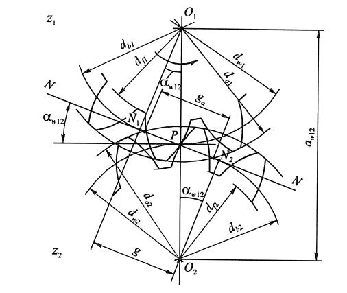
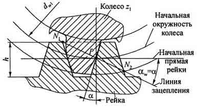
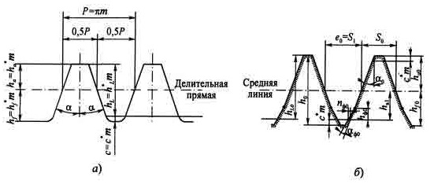
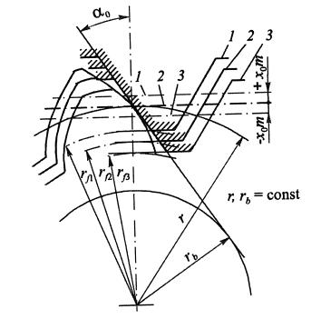

Профиль боковых сторон зубьев зубчатых колес с эвольвентным зацеплением представляет собой две симметрично расположенные эвольвенты.
Эвольвента - это плоская кривая с переменным радиусом кривизны, образованная некоторой точкой на прямой, обкатывающейся без скольжения по окружности, диаметром (радиусом) db(rb) называемой основной окружностью.
Обозначение всех параметров производится строчными, а не заглавными буквами с индексами, указывающими их принадлежность колесу, инструменту, типу окружности и виду сечения.
Порядок использования индексов определяется номером группы, т.е. вначале предпочтение отдается индексам первой группы, затем второй и т.д.
Некоторые индексы разрешается опускать в случаях, исключающих возникновение недоразумений или не имеющих применения по определению. Например, у прямозубых цилиндрических колес не используются индексы первой группы. В ряде случаев некоторые индексы с целью сокращения записи также опускаются.
Некоторые индексы разрешается опускать в случаях, исключающих возникновение недоразумений или не имеющих применения по определению. Например, у прямозубых цилиндрических колес не используются индексы первой группы. В ряде случаев некоторые индексы с целью сокращения записи также опускаются.
Рассмотрим зацепление двух прямозубых цилиндрических колес: с меньшим числом зубьев (z1), называемого шестерней, и с большим числом зубьев (z2), называемого колесом; соответственно с центрами колес в точках О1 и О2. В процессе обката шестерни с колесом происходит качение без скольжения двух центроид - окружностей, соприкасающихся в полюсе зацепления - Р. Эти окружности называются начальными, а их диаметры (радиусы) обозначаются с индексом w: dwl (rwl), dw2 (rw2). Для некорригированных колес эти окружности совпадают с делительными окружностями, обозначение диаметров (радиусов) которых дается без индексов первой и второй групп, т.е. для шестерни - d1(r1), для колеса - d2(r2).
Делительная окружность - окружность, на которой шаг между зубьями и угол профиля равны им же на делительной прямой зубчатой рейки, сцепленной с колесом. При этом шаг (Р = π · m) - расстояние между двумя соседними одноименными сторонами профиля. Отсюда диаметр делительной окружности колеса d = P · Z / π = m · Z
Модуль зуба (m = P / π) - величина условная, имеющая размерность в миллиметрах (мм) и используемая как масштаб для выражения многих параметров зубчатых колес. В зарубежной практике в этом качестве используется питч - величина, обратная модулю.
Основная окружность - это окружность, от которой образуется эвольвента. Все параметры, относящиеся к ней, обозначаются с индексом b например, диаметры (радиусы) колес в зацеплении: db1 (rbl), db2 (rb).
Касательно к основным окружностям через полюс зацепления Р проходит прямая N-N, а ее участок N1-N2 называется линией зацепления, по которой в процессе обката перемещается точка контакта сопрягаемых профилей колес. N1-N2 называется номинальной (теоретической) линией зацепления, обозначаемой буквой g. Расстояние между точками пересечения ее с окружностями выступов колес называется рабочим участком линии зацепления и обозначается ga.
В процессе обката зубчатых колес точка контакта профилей перемещается в пределах активного (рабочего) участка линии зацепления ga, которая является нормалью к профилям обоих колес в этих точках и одновременно общей касательной к обеим основным окружностям.
Угол между линией зацепления и перпендикуляром к линии, соединяющей центры сопрягаемых колес, называется углом зацепления. У корригированных колес этот угол обозначается αw12; для некорригированных колес αw12 = α0.
Межцентровое расстояние некорригированных колес
aW12 = rW1 + rW2 = r1 + r2 = m ·( Z1 + Z2 ) / 2
Окружности выступов и впадин - окружности, проходящие соответственно через вершины и впадины зубьев колес. Их диаметры (радиусы) обозначаются: da1 ( ra1 ), df1 ( rf1 ), da2 ( ra2 ), df2( rf2).
Коэффициент перекрытия, ε - отношение активной (рабочей) части линии зацепления к основному нормальному шагу:
ε = ga / Pbn
Окружная (торцовая) толщина зуба, St - длина дуги делительной окружности, заключенная между двумя сторонами зуба.
Окружная ширина впадины между зубьями, е - расстояние между разноименными сторонами профиля по дуге делительной окружности.
Высота головки зуба, ha - расстояние между окружностями выступов и делительной:
ha = ra - r
Высота ножки зуба hf - расстояние между окружностями делительной и впадин:
hf = r - rf
Высота зуба:
h = ha + hf
Рабочий участок профиля зуба - геометрическое место точек контакта профилей сопрягаемых колес, определяется как расстояние от вершины зуба до точки начала эвольвенты. Ниже последней следует переходная кривая.
Переходная кривая профиля зуба - часть профиля от начала эвольвенты, т.е. от основной окружности до окружности впадин. При методе копирования соответствует форме головки зуба инструмента, а при методе обкатки образуется вершинной кромкой режущего инструмента и имеет форму удлиненной эвольвенты (для инструментов реечного типа) или эпициклоиды (для инструментов типа колеса).
Как было показано выше, частным случаем эвольвенты при z = (бесконечность) является прямая линия. Это дает основание использовать в эвольвентном зацеплении рейку с прямобочными зубьями. При этом любое зубчатое колесо данного модуля независимо от числа зубьев может быть сцеплено с рейкой того же модуля. Отсюда возникла идея обработки колес методом обкатки. В зацеплении колеса с рейкой радиус начальной окружности последней равен бесконечности, а сама окружность превращается в начальную прямую рейки. Линия зацепления N1N2Так как профиль зубьев рейки - прямая линия, это в значительной мере упрощает контроль линейных параметров зубьев и угла профиля. С этой целью стандартами установлено понятие исходного контура зубчатой рейки, которая проходит через полюс Р касательно к основной окружности колеса и перпендикулярно к боковой стороне профиля зуба рейки. В процессе зацепления начальная окружность колеса обкатывается по начальной прямой рейки, а угол зацепления становится равным углу профиля зуба рейки α .
Так как профиль зубьев рейки - прямая линия, это в значительной мере упрощает контроль линейных параметров зубьев и угла профиля. С этой целью стандартами установлено понятие исходного контура зубчатой рейки.
Делительная прямая рейки проходит по середине рабочей высоты зуба hL.
Поправка ΔS 0 берется из справочников в зависимости от величины модуля зуба. Знак "+" берется для чистовых, а знак "-" - для черновых инструментов. В первом случае происходит утонение зубьев нарезаемого колеса с целью создания бокового зазора между зубьями сцепляемых колес, во втором случае утолщение, в результате чего нарезаемые зубья получают припуск на чистовую обработку.
У колес с обычным (модифицированным) профилем зубьев изменение толщины нарезаемых зубьев можно получить путем смещения инструментальной рейки относительно центра колеса и утолщение ее зубьев у ножки не требуется.
Параметры зацепления корригированных зубчатых колес. Корригирование (исправление) колес дает возможность улучшить зубчатое зацепление по сравнению с нормальным зацеплением в отношении трения, износа и прочности зубьев, уменьшить вероятность подреза ножки зубьев при малом их числе и др.
Применительно к долбякам корригирование дает возможность получения задних углов на режущих кромках (см. ниже).
Из известных методов корригирования на практике наибольшее применение нашло высотное корригирование, которое осуществляется путем смещения профиля исходной инструментальной рейки относительно центра нарезаемого колеса. Такое смещение принято считать положительным, если рейка отводится от центра колеса, и отрицательным, когда она приближается к его центру.
Величина смещения оценивается произведением хо · m, где х0 - коэффициент смещения
При положительном смещении высота головки зуба нарезаемого колеса h'a1 увеличивается на величину хо·m, а высота ножки h'f1 уменьшается на ту же величину. При отрицательном смещении, наоборот, высота головки зуба уменьшается, а высота ножки увеличивается. Полная высота зуба колеса в обоих случаях остается неизменной.
Так как при этом положение делительной и основной окружностей колеса постоянно и не зависит от величины смещения, то неизбежно изменение толщины зуба нарезаемого колеса по делительной окружности из-за смещения делительной прямой рейки относительно начального положения на величину ± хо·m. Толщина зуба по делительной окружности у корригированного колеса при смещении рейки инструмента
S'1, 3 = π · m / 2 ± 2 · x0·m · tg α0
где ΔS = x0 · m · tg α 0.
Знак "+" берется при положительном, а знак "-" - при отрицательном смещении.